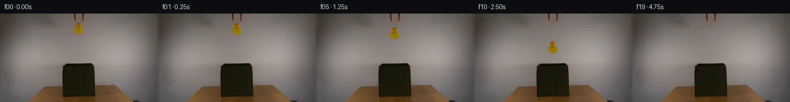

![首帧]()

Round 00
2026-11-04T23:28:23.845894+00:00像素候选变化代码 +194/−0inspection 更新
pixels 13e9cdfcab2acc0d · code 25c056903a0a1e34
查看本轮 generate.py 真实 diff
--- previous/generate.py
+++ current/generate.py
@@ -0,0 +1,194 @@
+#!/usr/bin/env python3
+"""Generate a locked-camera 20-frame rubber-duck release sequence."""
+
+from pathlib import Path
+
+import cv2
+import numpy as np
+from PIL import Image, ImageDraw, ImageFilter
+from scipy import ndimage
+
+from artifact_io import save
+
+
+ROOT = Path(__file__).resolve().parent
+W, H = 256, 144
+
+
+def duck_assets(source: np.ndarray):
+ """Return a clean plate and a tightly masked source duck sprite."""
+ yy, xx = np.indices((H, W))
+ r, g, b = [source[:, :, i].astype(np.int16) for i in range(3)]
+
+ # The duck is the single connected warm-yellow object in this measured ROI.
+ candidate = (
+ (xx >= 117)
+ & (xx <= 138)
+ & (yy >= 13)
+ & (yy <= 35)
+ & (r > 95)
+ & (g > 48)
+ & (b < 88)
+ & ((r - b) > 42)
+ & ((g - b) > 24)
+ )
+ labels, count = ndimage.label(candidate)
+ assert count > 0
+ sizes = ndimage.sum(candidate, labels, range(1, count + 1))
+ duck_mask = labels == (int(np.argmax(sizes)) + 1)
+ duck_mask = ndimage.binary_fill_holes(duck_mask)
+
+ ys, xs = np.where(duck_mask)
+ # Include a one-pixel antialiased fringe wherever it still has duck hue.
+ fringe = ndimage.binary_dilation(duck_mask, iterations=1)
+ warm_edge = (r > 90) & ((r - b) > 27) & ((g - b) > 12)
+ duck_mask |= fringe & warm_edge
+ ys, xs = np.where(duck_mask)
+ x0, x1 = int(xs.min()), int(xs.max()) + 1
+ y0, y1 = int(ys.min()), int(ys.max()) + 1
+
+ # Remove only the duck; the separated grabber jaws above y=13 remain intact.
+ repair_mask = ndimage.binary_dilation(duck_mask, iterations=2).astype(np.uint8) * 255
+ clean = cv2.inpaint(source, repair_mask, 5, cv2.INPAINT_TELEA)
+
+ rgba = np.zeros((y1 - y0, x1 - x0, 4), dtype=np.uint8)
+ rgba[:, :, :3] = source[y0:y1, x0:x1]
+ rgba[:, :, 3] = duck_mask[y0:y1, x0:x1].astype(np.uint8) * 255
+ return clean, Image.fromarray(rgba, "RGBA"), (x0, y0, x1, y1), duck_mask
+
+
+def add_contact_shadow(frame: np.ndarray, strength: float) -> np.ndarray:
+ if strength <= 0:
+ return frame
+ mask = Image.new("L", (W, H), 0)
+ draw = ImageDraw.Draw(mask)
+ draw.ellipse((113, 82, 141, 91), fill=int(round(70 * strength)))
+ mask = mask.filter(ImageFilter.GaussianBlur(3.0))
+ a = np.asarray(mask, dtype=np.float32)[:, :, None] / 255.0
+ out = frame.astype(np.float32) * (1.0 - 0.22 * a)
+ return np.clip(out, 0, 255).astype(np.uint8)
+
+
+def place_duck(
+ background: np.ndarray,
+ sprite: Image.Image,
+ source_bbox,
+ shift_y: int,
+ angle: float,
+) -> np.ndarray:
+ rotated = sprite.rotate(
+ angle,
+ resample=Image.Resampling.BICUBIC,
+ expand=True,
+ fillcolor=(0, 0, 0, 0),
+ )
+ x0, y0, x1, y1 = source_bbox
+ cx = (x0 + x1) / 2.0
+ cy = (y0 + y1) / 2.0 + shift_y
… diff truncated; 107 more lines …